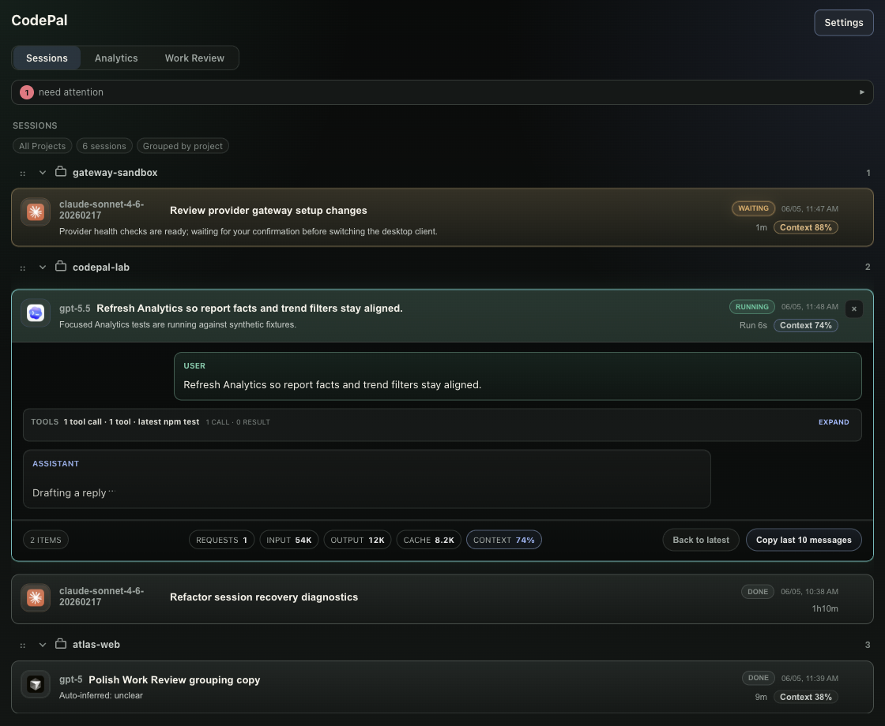
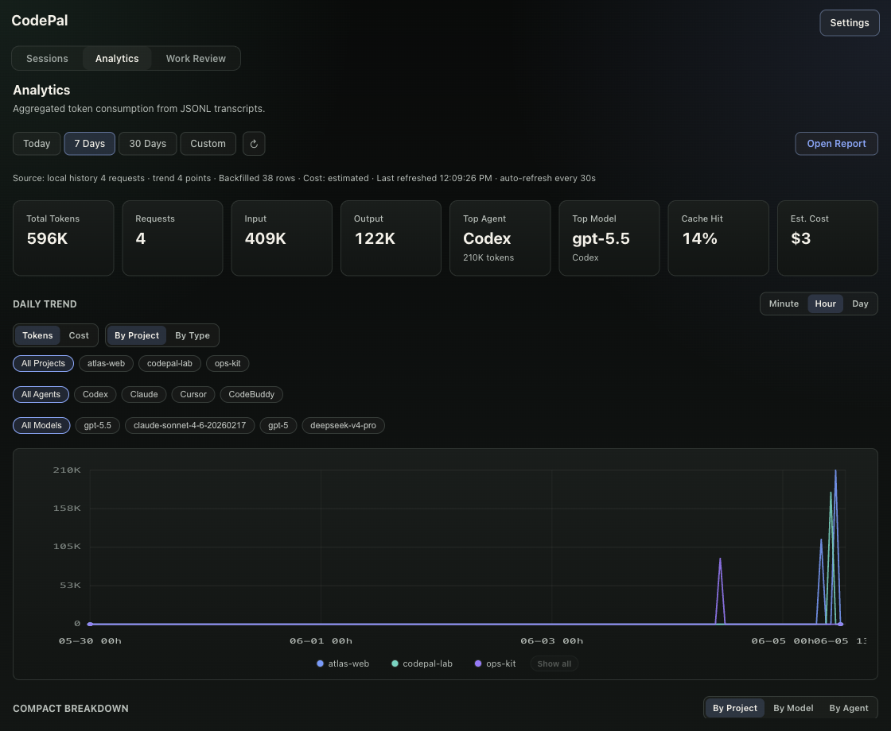
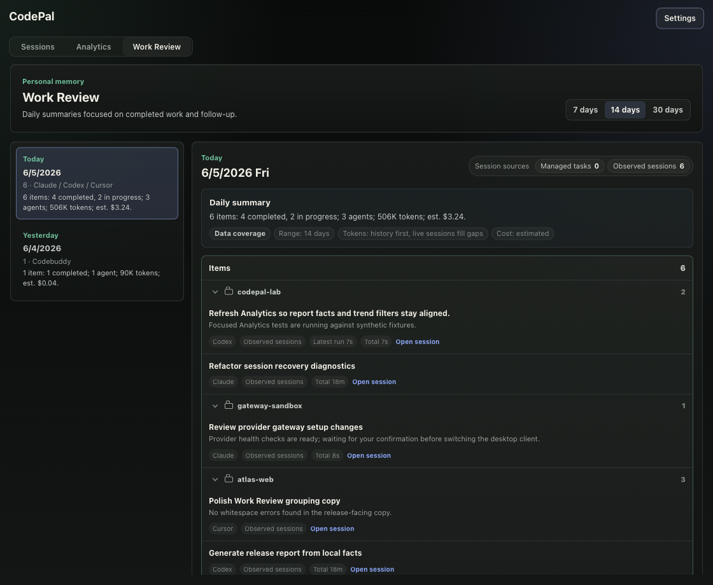

Unified session visibility
See running, waiting, completed, and errored sessions in one compact list.
Local-first AI coding operations
CodePal watches active sessions, timelines, usage, reports, daily review, and integration health across Cursor, Claude Code, Codex, CodeBuddy, GoLand, and PyCharm. Your agents keep their native approval and execution flow.

What it gives you
CodePal is built for people running several AI coding tools at once. It reduces context switching without becoming a cloud backend or approval middleman.
See running, waiting, completed, and errored sessions in one compact list.
Track requests, input, output, cache, models, agents, projects, and estimated cost.
Review recent AI coding work by day and project without rereading every transcript.
Waiting sessions, context pressure, failed work, and follow-up needs rise to the top.
Point supported desktop clients at local model profiles while keeping tokens local.
Repair supported local agent hooks and inspect health from one settings surface.
Screenshots
These images are generated from synthetic demo data in an isolated local profile. No real prompts, code paths, accounts, or provider tokens are shown.

Model, agent, project, cache, and cost views share one local analytics surface.

Work Review turns observed sessions into a project-grouped daily summary.
Trust boundary
CodePal is strongest when it adds visibility without taking ownership of execution.
If CodePal is closed or updating, your agent sessions continue in their original tools.
CodePal does not include its own remote analytics pipeline for prompts or transcripts.
Jump, repair, and message delivery stay capability-gated and explicitly initiated.
Short demo
The demo video is generated with Remotion from a scripted CodePal walkthrough: an isolated app profile, synthetic events, real UI clicks, Provider Gateway settings, and no private local data.
Open video file